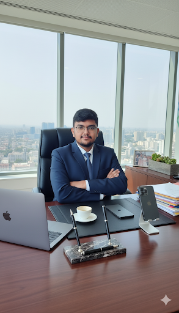

I’m Abdul Saboor Malik, an Artificial Intelligence student at Iqra University and a Digital Marketer at Supporters Marketing.
I believe real growth doesn’t come from theory alone — it comes from learning, testing, failing, and building again.
My SSC phase built my foundation in discipline, consistency, and structured learning habits. It shaped my mindset toward education and self-growth.
During HSSC, I started exploring beyond textbooks. I developed interest in technology, digital skills, and real-world systems that drive modern industries.
Currently, I am studying Artificial Intelligence at Iqra University, where I am building skills in logic, computing, and problem-solving through modern technologies.
I have developed practical expertise in:
I gained these through short courses and hands-on experimentation.
What sets me apart is my mindset — I don’t just learn skills, I test how they work in real markets. I analyze trends, experiment with strategies, and explore areas like dropshipping and trading to understand how systems actually perform.
I’m building myself at the intersection of AI and Digital Marketing, where creativity meets data and strategy meets execution.